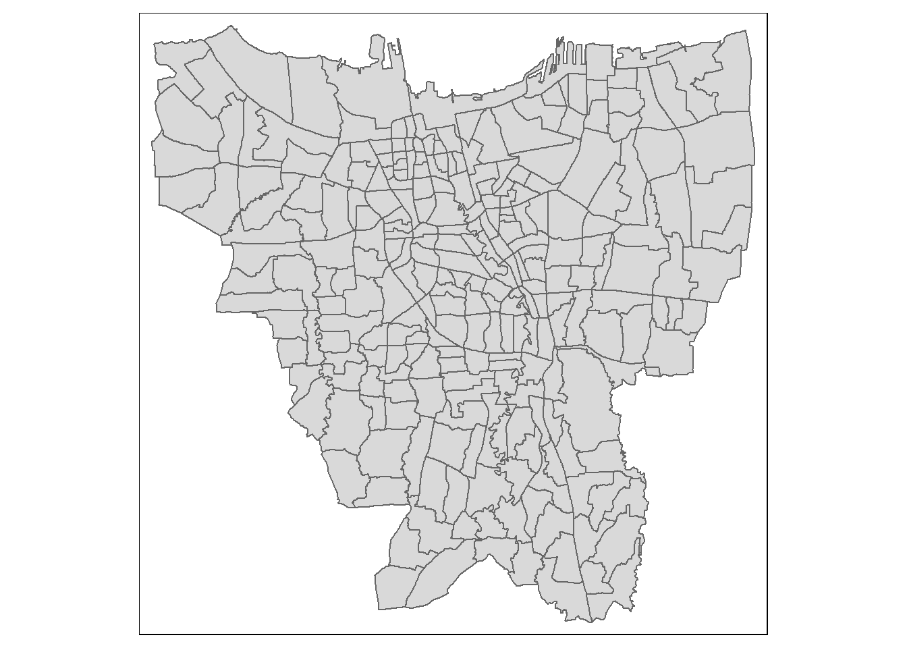
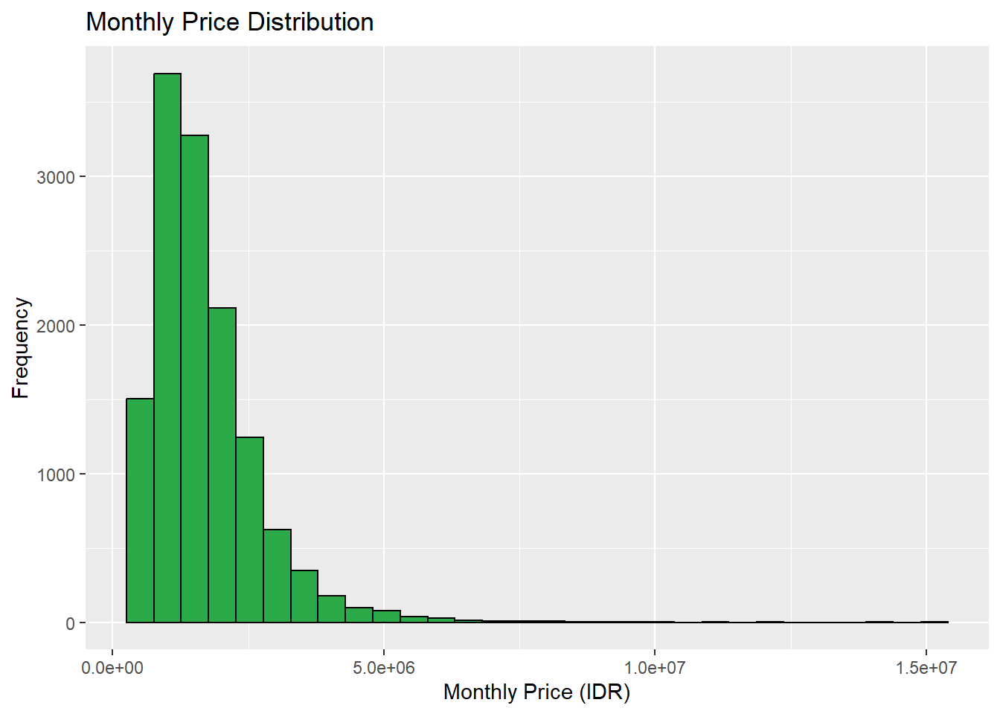
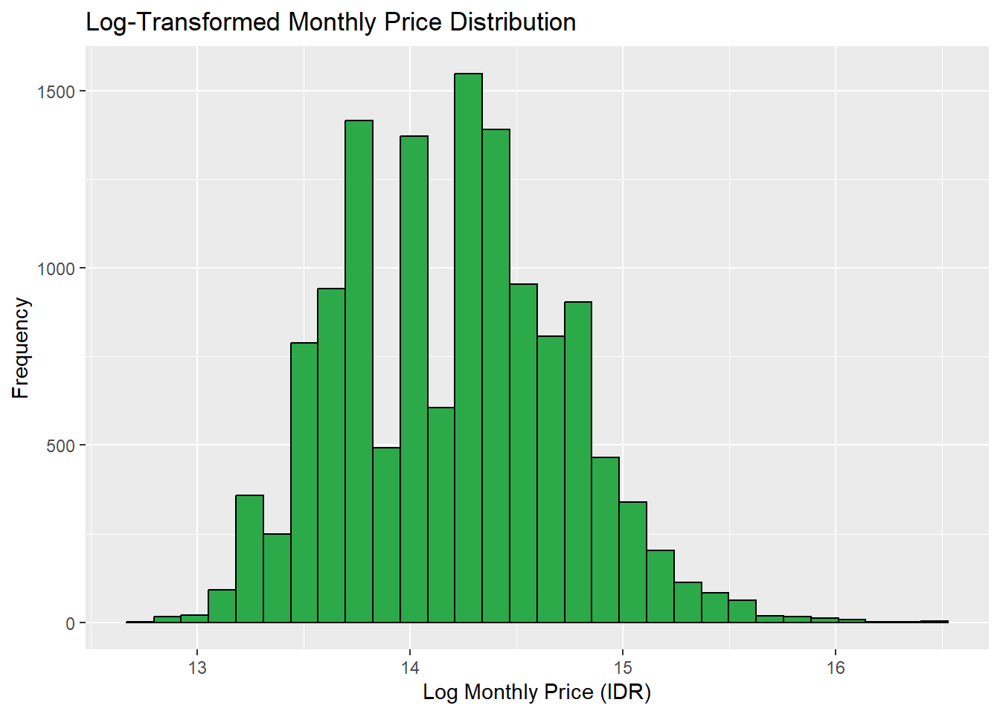
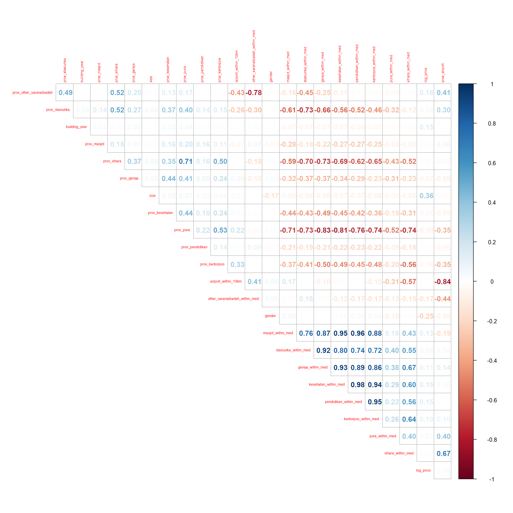
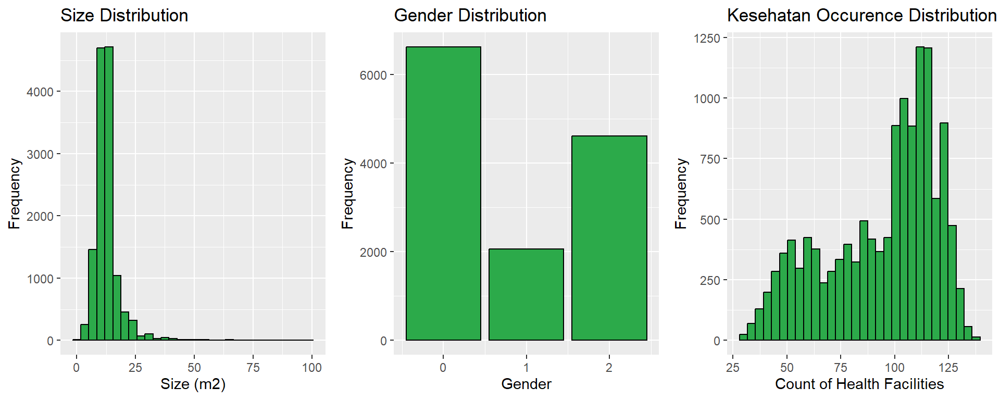
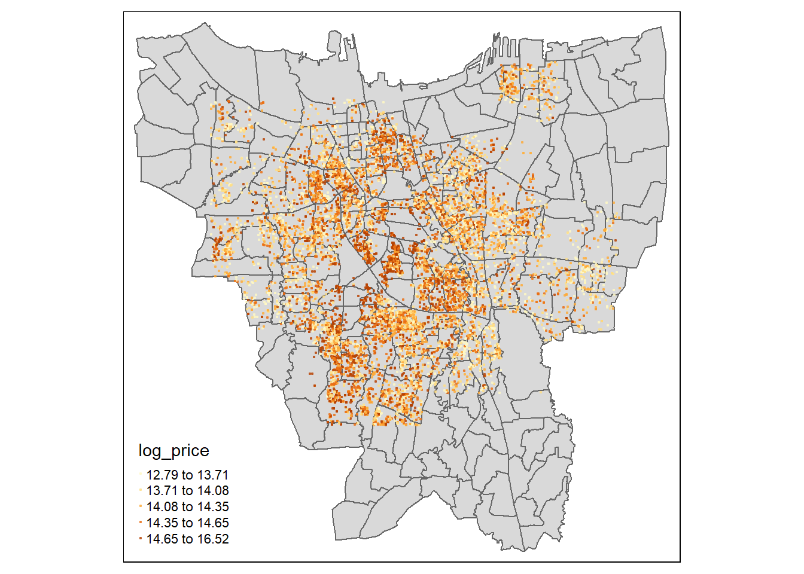
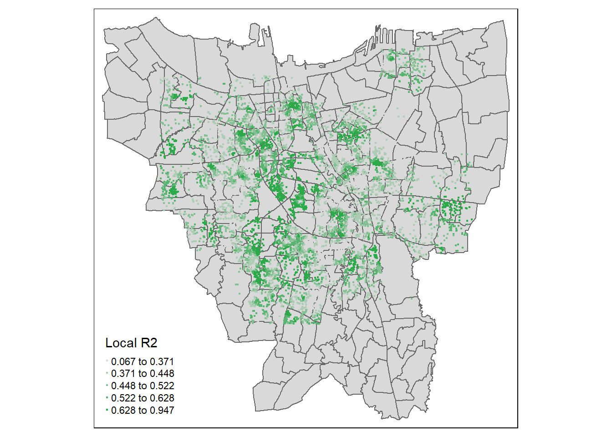
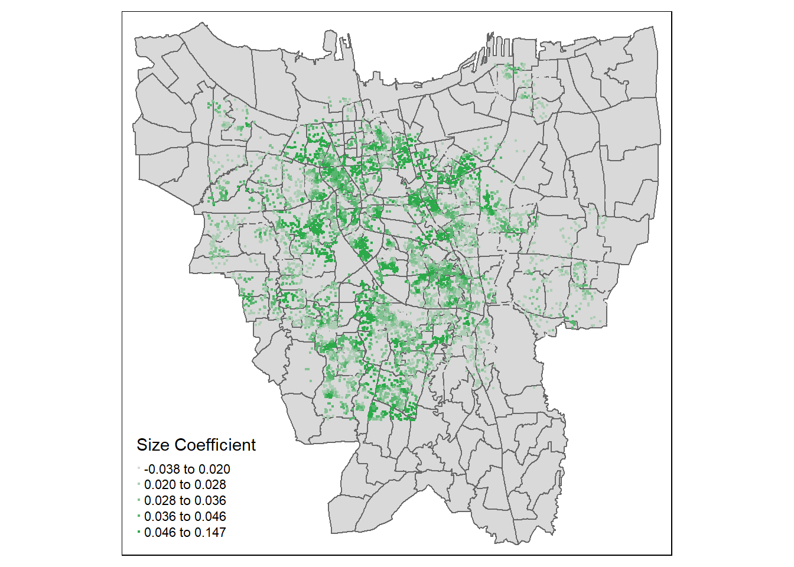
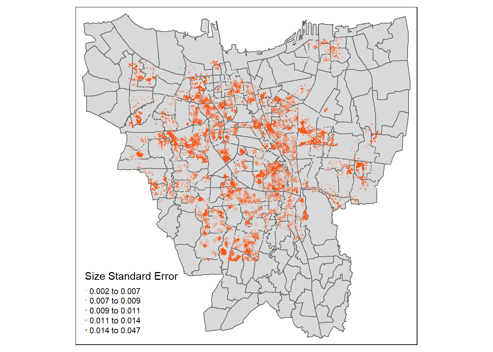

Code
pacman::p_load(car, olsrr, corrplot, ggpubr, sf, spdep, GWmodel, tmap, tidyverse, gtsummary)This dataset is taken from the Indonesia Geospasial website
It is divided based on the different administrative cities in Jakarta, consisting of the POIs available in each city.
School and University dataset in Jakarta
pacman::p_load(car, olsrr, corrplot, ggpubr, sf, spdep, GWmodel, tmap, tidyverse, gtsummary)First, we need to combine the shapefiles of each administrative ‘desa’ in Jakarta to create a map of Jakarta.
jakbar_adm_desa <- st_read(dsn = "data/geospatial/Jakarta/KOTA_JAKARTA_BARAT", layer = "ADMINISTRASIDESA_AR_25K")
jakbar_adm_desa <- st_zm(jakbar_adm_desa, zm="Z")
jakbar_adm_desa_sf <- jakbar_adm_desa |> st_transform(crs = 4326)
jakpus_adm_desa <- st_read(dsn = "data/geospatial/Jakarta/KOTA_JAKARTA_PUSAT", layer = "ADMINISTRASIDESA_AR_25K")
jakpus_adm_desa <- st_zm(jakpus_adm_desa, zm="Z")
jakpus_adm_desa_sf <- jakpus_adm_desa |> st_transform(crs = 4326)
jaksel_adm_desa <- st_read(dsn = "data/geospatial/Jakarta/KOTA_JAKARTA_SELATAN", layer = "ADMINISTRASIDESA_AR_25K")
jaksel_adm_desa <- st_zm(jaksel_adm_desa, zm="Z")
jaksel_adm_desa_sf <- jaksel_adm_desa |> st_transform(crs = 4326)
jakut_adm_desa <- st_read(dsn = "data/geospatial/Jakarta/KOTA_JAKARTA_UTARA", layer = "ADMINISTRASIDESA_AR_25K")
jakut_adm_desa <- st_zm(jakut_adm_desa, zm="Z")
jakut_adm_desa_sf <- jakut_adm_desa |> st_transform(crs = 4326)
jaktim_adm_desa <- st_read(dsn = "data/geospatial/Jakarta/KOTA_JAKARTA_TIMUR", layer = "ADMINISTRASIDESA_AR_25K")
jaktim_adm_desa <- st_zm(jaktim_adm_desa, zm="Z")
jaktim_adm_desa_sf <- jaktim_adm_desa |> st_transform(crs = 4326)
jaktim_adm_desa_sf <- st_make_valid(jaktim_adm_desa_sf)To combine the shapefiles, we use the rbind function. Then, we save the shapefile as an shp file so that we can call it.
jakarta_sf <- rbind(jakbar_adm_desa_sf,
jakpus_adm_desa_sf,
jaksel_adm_desa_sf,
jakut_adm_desa_sf,
jaktim_adm_desa_sf)
write_rds(jakarta_sf, "data/rds/jakarta_sf.rds")jakarta_sf <- read_rds("data/rds/jakarta_sf.rds")
qtm(jakarta_sf)
mamikos <- read_csv("data/aspatial/mamikos.csv")Some of the important columns in the dataset include:
_id: The unique identifier for each unit.
price_monthly: The monthly price of the unit.
latitude: The latitude of the unit.
longitude: The longitude of the unit.
gender: The gender preference for potential tenants (mixed, male, or female).
size : The size of the accommodation.
fac_room: Facilities available within the room itself (e.g., air conditioning, bed, wardrobe, etc.).
fac_share: Shared facilities that tenants can use (e.g., kitchen, living room).
fac_bath: Bathroom facilities (private or shared, including features like hot water).
fac_near: Facilities or points of interest near the accommodation (e.g., supermarket, campus, public transport).
fac_park: Parking facilities (availability and type, such as for cars or motorbikes).
kos_rule: The rules or regulations tenants must follow (e.g., no pets, curfew times).
fac_price: Additional costs for facilities (e.g., laundry fees, cleaning service fees).
building_year: The year the building was constructed or established.
number_success_owner_trx: The number of successful transactions the owner has completed on the platform.
number_success_kos_trx: The number of successful transactions for this specific listing.
For the purpose of this prototyping, we will only focus on price_monthly, latitude, longitude, gender, size, and building_year.
mamikos <- mamikos |>
select(`_id`, price_monthly, latitude, longitude, gender, size, building_year)The size column is currently a character column with inconsistent formats. We will convert this to a numeric column representing the total area. To do that, we will create a custom function to calculate the area based on the different formats found in the dataset.
calculate_area <- function(size_string) {
# Deal with potential NA values upfront
if (is.na(size_string)) {
return(NA)
}
# lowercase the string for easier matching
size <- tolower(size_string)
# Replace all non-standard x's and commas with a standard format
size <- gsub("×", "x", size)
# Normalize decimal separator from comma to dot and remove spaces
size <- gsub(",\\s*", ".", size) # Changes "2,5 x 3" to "2.5 x 3"
# Remove any "m2" text, assuming that the presence of 'x' or '×' already denotes area calculation
size <- gsub("m2", "", size, ignore.case = TRUE)
# Extract numeric values
numbers <- as.numeric(unlist(str_extract_all(size, "[0-9.]+")))
# Simple heuristic: if more than 2 numbers, take first two assuming additional info is irrelevant
if (length(numbers) > 2) {
numbers <- numbers[1:2]
}
# Calculate the area; if it's a single number, assume it's already the area
area <- if (length(numbers) == 2) prod(numbers) else if (length(numbers) == 1) numbers else 0
if (area > 10000) {
area <- area / 10000
} else if (area > 100) {
area <- area / 100
} else if (area == 0 ) {
area <- NA
}
return (area)
}We can now apply this function to the size column to calculate the area in square meters.
mamikos <- mamikos |>
mutate(size = sapply(size, calculate_area))Some entries in the building_year column have a value of 0, which is likely an error or missing data. We will remove these entries from the dataset.
mamikos <- mamikos |>
filter(building_year > 0)Finally, we will remove any rows with missing values in the dataset.
mamikos <- mamikos |>
drop_na()mamikos_sf <- st_as_sf(mamikos, coords = c("longitude", "latitude"), crs=4326)Although the dataset is scraped specifially for Jakarta, the website still recommends units outside of Jakarta. We will filter the dataset to only include units within Jakarta.
mamikos_sf <- mamikos_sf |>
st_intersection(jakarta_sf) |>
select(X_id, price_monthly, gender, size, building_year, geometry)
write_rds(mamikos_sf, "data/rds/mamikos_sf.rds")POIs are points of interest that are relevant to potential tenants. In this prototype, we will focus on the following POIs:
Airport: Soekarno-Hatta International Airport and Halim Perdanakusuma International Airport.
Stasiun Kereta Api: Train stations.
Kesehatan: Health facilities.
Pendidikan: Schools and universities.
Kantor Pos: Post offices.
Sarana Ibadah: Places of worship.
Before we can calculate the distance between each Mamikos unit and the Points of Interest (POIs), we need to create a helper remove_unit() to remove the unit string generated by the function.
remove_unit <- function(x) {
as.numeric(str_sub(x, 1, -4))
}Since the airport shapefile in the Jakarta dataset are all empty, we will manually input the coordinates of the two airports in Jakarta.
name <- c("Soekarno-Hatta International Airport", "Halim Perdanakusuma International Airport")
lat <- c(-6.123335553024524, -6.265380365738848)
lon <- c(106.65980883674271, 106.8851665557591)
REMARK <- c("AIRPORT", "AIRPORT")
airport <- data.frame(REMARK, lat, lon) |> st_as_sf(coords = c("lon", "lat"), crs = 4326)We will read the shapefiles of the train stations in each administrative ‘desa’ in Jakarta and combine them into one.
stasiunka_jakbar <- st_read(dsn = "data/geospatial/Jakarta/KOTA_JAKARTA_BARAT", layer = "STASIUNKA_PT_25K")
stasiunka_jakbar_sf <- stasiunka_jakbar |> st_transform(crs = 4326) |> select(REMARK, geometry)
stasiunka_jakpus <- st_read(dsn = "data/geospatial/Jakarta/KOTA_JAKARTA_PUSAT", layer = "STASIUNKA_PT_25K")
stasiunka_jakpus_sf <- stasiunka_jakpus |> st_transform(crs = 4326) |> select(REMARK, geometry)
stasiunka_jaksel <- st_read(dsn = "data/geospatial/Jakarta/KOTA_JAKARTA_SELATAN", layer = "STASIUNKA_PT_25K")
stasiunka_jaksel_sf <- stasiunka_jaksel |> st_transform(crs = 4326) |> select(REMARK, geometry)
stasiunka_jakut <- st_read(dsn = "data/geospatial/Jakarta/KOTA_JAKARTA_UTARA", layer = "STASIUNKA_PT_25K")
stasiunka_jakut_sf <- stasiunka_jakut |> st_transform(crs = 4326) |> select(REMARK, geometry)
stasiunka_jaktim <- st_read(dsn = "data/geospatial/Jakarta/KOTA_JAKARTA_TIMUR", layer = "STASIUNKA_PT_25K")
stasiunka_jaktim_sf <- stasiunka_jaktim |> st_transform(crs = 4326) |> select(REMARK, geometry)
stasiunka <- rbind(stasiunka_jakbar_sf, stasiunka_jakpus_sf, stasiunka_jaksel_sf, stasiunka_jakut_sf, stasiunka_jaktim_sf) |> mutate(REMARK = "STASIUNKA") |> st_zm(zm="Z")CALCULATING MEDIAN DISTANCE BETWEEN STASIUNKA
Now we need to count the number of POIs within a certain distance from the rental units. We will use the median distance as the threshold.
stasiunka_dist <- st_distance(stasiunka)
stasiunka_dist <- data.frame(stasiunka_dist)
stasiunka_dist <- sapply(stasiunka_dist, remove_unit)
colnames(stasiunka_dist) <- stasiunka$REMARK
rownames(stasiunka_dist) <- stasiunka$REMARK
stasiunka_dist_med <- apply(stasiunka_dist, 1, median, na.rm = TRUE)
stasiunka_dist_med <- data.frame(stasiunka_dist_med)
stasiunka_med <- median(stasiunka_dist_med$stasiunka_dist_med)Next, we will read the shapefiles of the health facilities in each administrative ‘desa’ in Jakarta and combine them into one.
kesehatan_jakbar <- st_read(dsn = "data/geospatial/Jakarta/KOTA_JAKARTA_BARAT", layer = "KESEHATAN_PT_25K")
kesehatan_jakbar_sf <- kesehatan_jakbar |> st_transform(crs = 4326) |> select(REMARK, geometry)
kesehatan_jakpus <- st_read(dsn = "data/geospatial/Jakarta/KOTA_JAKARTA_PUSAT", layer = "KESEHATAN_PT_25K")
kesehatan_jakpus_sf <- kesehatan_jakpus |> st_transform(crs = 4326) |> select(REMARK, geometry)
kesehatan_jaksel <- st_read(dsn = "data/geospatial/Jakarta/KOTA_JAKARTA_SELATAN", layer = "KESEHATAN_PT_25K")
kesehatan_jaksel_sf <- kesehatan_jaksel |> st_transform(crs = 4326) |> select(REMARK, geometry)
kesehatan_jakut <- st_read(dsn = "data/geospatial/Jakarta/KOTA_JAKARTA_UTARA", layer = "KESEHATAN_PT_25K")
kesehatan_jakut_sf <- kesehatan_jakut |> st_transform(crs = 4326) |> select(REMARK, geometry)
kesehatan_jaktim <- st_read(dsn = "data/geospatial/Jakarta/KOTA_JAKARTA_TIMUR", layer = "KESEHATAN_PT_25K")
kesehatan_jaktim_sf <- kesehatan_jaktim |> st_transform(crs = 4326) |> select(REMARK, geometry)
kesehatan <- rbind(kesehatan_jakbar_sf, kesehatan_jakpus_sf, kesehatan_jaksel_sf, kesehatan_jakut_sf, kesehatan_jaktim_sf) |> mutate(REMARK = "KESEHATAN") |> st_zm(zm="Z")CALCULATING MEDIAN DISTANCE BETWEEN KESEHATAN
Same as the STASIUNKA POI, we will calculate the median distance between each health facility in Jakarta, which will be used when we are counting the number of POIs within a certain distance from the rental units.
kesehatan_dist <- st_distance(kesehatan)
kesehatan_dist <- data.frame(kesehatan_dist)
kesehatan_dist <- sapply(kesehatan_dist, remove_unit)
colnames(kesehatan_dist) <- kesehatan$REMARK
rownames(kesehatan_dist) <- kesehatan$REMARK
kesehatan_dist_med <- apply(kesehatan_dist, 1, median, na.rm = TRUE)
kesehatan_dist_med <- data.frame(kesehatan_dist_med)
kesehatan_med <- median(kesehatan_dist_med$kesehatan_dist_med)pendidikan_jakbar <- st_read(dsn = "data/Jakarta/KOTA_JAKARTA_BARAT", layer = "PENDIDIKAN_PT_25K")
pendidikan_jakbar_sf <- pendidikan_jakbar |> st_transform(crs = 4326) |> select(REMARK, geometry)
pendidikan_jakpus <- st_read(dsn = "data/Jakarta/KOTA_JAKARTA_PUSAT", layer = "PENDIDIKAN_PT_25K")
pendidikan_jakpus_sf <- pendidikan_jakpus |> st_transform(crs = 4326) |> select(REMARK, geometry)
pendidikan_jaksel <- st_read(dsn = "data/Jakarta/KOTA_JAKARTA_SELATAN", layer = "PENDIDIKAN_PT_25K")
pendidikan_jaksel_sf <- pendidikan_jaksel |> st_transform(crs = 4326) |> select(REMARK, geometry)
pendidikan_jakut <- st_read(dsn = "data/Jakarta/KOTA_JAKARTA_UTARA", layer = "PENDIDIKAN_PT_25K")
pendidikan_jakut_sf <- pendidikan_jakut |> st_transform(crs = 4326) |> select(REMARK, geometry)
pendidikan_jaktim <- st_read(dsn = "data/Jakarta/KOTA_JAKARTA_TIMUR", layer = "PENDIDIKAN_PT_25K")
pendidikan_jaktim_sf <- pendidikan_jaktim |> st_transform(crs = 4326) |> select(REMARK, geometry)
pendidikan <- rbind(pendidikan_jakbar_sf, pendidikan_jakpus_sf, pendidikan_jaksel_sf, pendidikan_jakut_sf, pendidikan_jaktim_sf) |> mutate(REMARK = "PENDIDIKAN") |> st_zm(zm="Z")CALCULATING MEDIAN DISTANCE BETWEEN PENDIDIKAN
pendidikan_dist <- st_distance(pendidikan)
pendidikan_dist <- data.frame(pendidikan_dist)
pendidikan_dist <- sapply(pendidikan_dist, rm_unit)
colnames(pendidikan_dist) <- pendidikan$REMARK
rownames(pendidikan_dist) <- pendidikan$REMARK
pendidikan_dist_med <- apply(pendidikan_dist, 1, median, na.rm = TRUE)
pendidikan_dist_med <- data.frame(pendidikan_dist_med)
pendidikan_med <- median(pendidikan_dist_med$pendidikan_dist_med)We will also read the shapefiles of the post offices in each administrative ‘desa’ in Jakarta and combine them into one.
kantorpos_jakbar <- st_read(dsn = "data/geospatial/Jakarta/KOTA_JAKARTA_BARAT", layer = "KANTORPOS_PT_25K")
kantorpos_jakbar_sf <- kantorpos_jakbar |> st_transform(crs = 4326) |> select(REMARK, geometry)
kantorpos_jakpus <- st_read(dsn = "data/geospatial/Jakarta/KOTA_JAKARTA_PUSAT", layer = "KANTORPOS_PT_25K")
kantorpos_jakpus_sf <- kantorpos_jakpus |> st_transform(crs = 4326) |> select(REMARK, geometry)
kantorpos_jaksel <- st_read(dsn = "data/geospatial/Jakarta/KOTA_JAKARTA_SELATAN", layer = "KANTORPOS_PT_25K")
kantorpos_jaksel_sf <- kantorpos_jaksel |> st_transform(crs = 4326) |> select(REMARK, geometry)
kantorpos_jakut <- st_read(dsn = "data/geospatial/Jakarta/KOTA_JAKARTA_UTARA", layer = "KANTORPOS_PT_25K")
kantorpos_jakut_sf <- kantorpos_jakut |> st_transform(crs = 4326) |> select(REMARK, geometry)
kantorpos_jaktim <- st_read(dsn = "data/geospatial/Jakarta/KOTA_JAKARTA_TIMUR", layer = "KANTORPOS_PT_25K")
kantorpos_jaktim_sf <- kantorpos_jaktim |> st_transform(crs = 4326) |> select(REMARK, geometry)
kantorpos <- rbind(kantorpos_jakbar_sf, kantorpos_jakpus_sf, kantorpos_jaksel_sf, kantorpos_jakut_sf, kantorpos_jaktim_sf) |> mutate(REMARK = "KANTORPOS") |> st_zm(zm="Z")CALCULATING MEDIAN DISTANCE BETWEEN KANTORPOS
We will calculate the median distance between each post office in Jakarta, which will be used when we are counting the number of POIs within a certain distance from the rental units.
kantorpos_dist <- st_distance(kantorpos)
kantorpos_dist <- data.frame(kantorpos_dist)
kantorpos_dist <- sapply(kantorpos_dist, remove_unit)
colnames(kantorpos_dist) <- kantorpos$REMARK
rownames(kantorpos_dist) <- kantorpos$REMARK
kantorpos_dist_med <- apply(kantorpos_dist, 1, median, na.rm = TRUE)
kantorpos_dist_med <- data.frame(kantorpos_dist_med)
kantorpos_med <- median(kantorpos_dist_med$kantorpos_dist_med)This time, we will read the shapefiles of the places of worship in each administrative ‘desa’ in Jakarta and combine them into one.
saranaibadah_jakbar <- st_read(dsn = "data/geospatial/Jakarta/KOTA_JAKARTA_BARAT", layer = "SARANAIBADAH_PT_25K")
saranaibadah_jakbar_sf <- saranaibadah_jakbar |> st_transform(crs = 4326) |> select(REMARK, geometry)
saranaibadah_jakpus <- st_read(dsn = "data/geospatial/Jakarta/KOTA_JAKARTA_PUSAT", layer = "SARANAIBADAH_PT_25K")
saranaibadah_jakpus_sf <- saranaibadah_jakpus |> st_transform(crs = 4326) |> select(REMARK, geometry)
saranaibadah_jaksel <- st_read(dsn = "data/geospatial/Jakarta/KOTA_JAKARTA_SELATAN", layer = "SARANAIBADAH_PT_25K")
saranaibadah_jaksel_sf <- saranaibadah_jaksel |> st_transform(crs = 4326) |> select(REMARK, geometry)
saranaibadah_jakut <- st_read(dsn = "data/geospatial/Jakarta/KOTA_JAKARTA_UTARA", layer = "SARANAIBADAH_PT_25K")
saranaibadah_jakut_sf <- saranaibadah_jakut |> st_transform(crs = 4326) |> select(REMARK, geometry)
saranaibadah_jaktim <- st_read(dsn = "data/geospatial/Jakarta/KOTA_JAKARTA_TIMUR", layer = "SARANAIBADAH_PT_25K")
saranaibadah_jaktim_sf <- saranaibadah_jaktim |> st_transform(crs = 4326) |> select(REMARK, geometry)
saranaibadah <- rbind(saranaibadah_jakbar_sf, saranaibadah_jakpus_sf, saranaibadah_jaksel_sf, saranaibadah_jakut_sf, saranaibadah_jaktim_sf) |> st_zm(zm="Z")CALCULATING MEDIAN DISTANCE BETWEEN SARANAIBADAH
We will calculate the median distance between each place of worship in Jakarta, which will be used when we are counting the number of POIs within a certain distance from the rental units.
masjid <- saranaibadah |> filter(REMARK == "Masjid")
gereja <- saranaibadah |> filter(REMARK == "Gereja")
vihara <- saranaibadah |> filter(REMARK == "Vihara")
pura <- saranaibadah |> filter(REMARK == "Pura")
other_saranaibadah <- saranaibadah |> filter(REMARK == "Peribadatan/Sosial Lainnya")masjid_dist <- st_distance(masjid)
masjid_dist <- data.frame(masjid_dist)
masjid_dist <- sapply(masjid_dist, remove_unit)
masjid_dist_med <- apply(masjid_dist, 1, median, na.rm = TRUE)
masjid_dist_med <- data.frame(masjid_dist_med)
masjid_med <- median(masjid_dist_med$masjid_dist_med)gereja_dist <- st_distance(gereja)
gereja_dist <- data.frame(gereja_dist)
gereja_dist <- sapply(gereja_dist, remove_unit)
gereja_dist_med <- apply(gereja_dist, 1, median, na.rm = TRUE)
gereja_dist_med <- data.frame(gereja_dist_med)
gereja_med <- median(gereja_dist_med$gereja_dist_med)vihara_dist <- st_distance(vihara)
vihara_dist <- data.frame(vihara_dist)
vihara_dist <- sapply(vihara_dist, remove_unit)
vihara_dist_med <- apply(vihara_dist, 1, median, na.rm = TRUE)
vihara_dist_med <- data.frame(vihara_dist_med)
vihara_med <- median(vihara_dist_med$vihara_dist_med)pura_dist <- st_distance(pura)
pura_dist <- data.frame(pura_dist)
pura_dist <- sapply(pura_dist, remove_unit)
pura_dist_med <- apply(pura_dist, 1, median, na.rm = TRUE)
pura_dist_med <- data.frame(pura_dist_med)
pura_med <- median(pura_dist_med$pura_dist_med)other_saranaibadah_dist <- st_distance(other_saranaibadah)
other_saranaibadah_dist <- data.frame(other_saranaibadah_dist)
other_saranaibadah_dist <- sapply(other_saranaibadah_dist, remove_unit)
other_saranaibadah_dist_med <- apply(other_saranaibadah_dist, 1, median, na.rm = TRUE)
other_saranaibadah_dist_med <- data.frame(other_saranaibadah_dist_med)
other_saranaibadah_med <- median(other_saranaibadah_dist_med$other_saranaibadah_dist_med)After getting all the data of the POI, we will now combine them into one single dataframe
poi <- rbind(airport, stasiunka, kesehatan, pendidikan, kantorpos, saranaibadah)In order to examine the influence of the POIs to the rent price of the rental units, we need to calculate the distance matrix between each of the rental units and each of the POIs. To find the distance, we can use st_distance() function from the sf package.
distance <- st_distance(mamikos_sf, poi)
distance <- data.frame(distance)
colnames(distance) <- poi$REMARK
rownames(distance) <- mamikos_sf$`_id`To make it easier for us to read and process the data, we need to remove the unit from the distance in the data frame and change the data type to numeric. We also need to pivot the data frame so that it can be easier for us to process the data when finding the minimum proximity to the POIs and the number of POIs within the median distance that we calculated earlier. We also save the data into an RDS file so that we can just call it when we want to use it in the future.
distance <- sapply(distance, rm_unit)
rownames(distance) <- mamikos_sf$`_id`
distance <- as.data.frame(distance)
distance$id <- as.numeric(rownames(distance))
distance_pair <- distance |> pivot_longer(!id, names_to = "POI", values_to = "Distance")
saveRDS(distance_pair, "rds/distance_pair.rds")In order to find the nearest distance to each POI for each rental unit, we can use the dplyr package to group the data by the rental unit id and the POI, then summarize the data by finding the minimum distance. We can also pivot the data so that it can be easier for us to process the data when we want to join it with the mamikos dataset. We also save the data into an RDS file so that we can just call it when we want to use it in the future.
distance_min_prox <- distance_pair |>
group_by(id, POI) |>
summarise(min_distance = min(Distance)) |>
pivot_wider(names_from = POI, values_from = min_distance)
saveRDS(distance_min_prox, "rds/distance_min_prox.rds")To count the number of POIs within the median distance for each rental unit, we need to group by the id of each rental unit then use the summarise() function from the dplyr package to count the number of POIs within the median distance. We also save the data into an RDS file so that we can just call it when we want to use it in the future.
distance_within <- distance_pair |>
group_by(id) |>
summarise(airport_within_10km = sum(POI == "AIRPORT" & Distance <= 10000),
stasiunka_within_med = sum(POI == "STASIUNKA" & Distance <= stasiunka_med),
kesehatan_within_med = sum(POI == "KESEHATAN" & Distance <= kesehatan_med),
kantorpos_within_med = sum(POI == "KANTORPOS" & Distance <= kantorpos_med),
masjid_within_med = sum(POI == "Masjid" & Distance <= masjid_med),
gereja_within_med = sum(POI == "Gereja" & Distance <= gereja_med),
vihara_within_med = sum(POI == "Vihara" & Distance <= vihara_med),
pura_within_med = sum(POI == "Pura" & Distance <= pura_med),
other_saranaibadah_within_med = sum(POI == "Peribadatan/Sosial Lainnya" & Distance <= other_saranaibadah_med),
pendidikan_within_med = sum(POI == "PENDIDIKAN" & Distance <= pendidikan_med))
saveRDS(distance_within, "rds/distance_within.rds")After finding the minimum proximity and the count of the POIs to each rental unit, we now combine these columns into the mamikos dataset to put it in our model.
mamikos_full <- left_join(mamikos_sf, distance_min_prox, by = c("_id" = "id")) |> left_join(distance_within, by = c("_id" = "id"))
mamikos_full <- mamikos_full |>
rename("PROX_AIRPORT" = "AIRPORT",
"PROX_STASIUNKA" = "STASIUNKA",
"PROX_KESEHATAN" = "KESEHATAN",
"PROX_PENDIDIKAN" = "PENDIDIKAN",
"PROX_KANTORPOS" = "KANTORPOS",
"PROX_MASJID" = "Masjid",
"PROX_GEREJA" = "Gereja",
"PROX_VIHARA" = "Vihara",
"PROX_PURA" = "Pura",
"PROX_OTHER_SARANAIBADAH" = "Peribadatan/Sosial Lainnya",
"AIRPORT_WITHIN_10KM" = "airport_within_10km",
"STASIUNKA_WITHIN_MED" = "stasiunka_within_med",
"KESEHATAN_WITHIN_MED" = "kesehatan_within_med",
"PENDIDIKAN_WITHIN_MED" = "pendidikan_within_med",
"KANTORPOS_WITHIN_MED" = "kantorpos_within_med",
"MASJID_WITHIN_MED" = "masjid_within_med",
"GEREJA_WITHIN_MED" = "gereja_within_med",
"VIHARA_WITHIN_MED" = "vihara_within_med",
"PURA_WITHIN_MED" = "pura_within_med",
"OTHER_SARANAIBADAH_WITHIN_MED" = "other_saranaibadah_within_med")
names(mamikos_full) <- tolower(names(mamikos_full))
saveRDS(mamikos_full, "rds/mamikos_full.rds")mamikos_full <- read_rds("data/rds/mamikos_full.rds")ggplot(mamikos_full, aes(x = price_monthly)) +
geom_histogram(bins = 30, fill = "#2caa4a", color = "black") +
labs(title = "Monthly Price Distribution",
x = "Monthly Price (IDR)",
y = "Frequency")
You can see that the distribution of the selling price is right-skewed, with a long tail to the right. This skewed distribution is typical of real estate prices, where most of the properties are sold at a lower price, with a few sold at a much higher price.
However, working with the raw selling price can be problematic, especially when the distribution is skewed. We can transform the selling price using the natural logarithm to make the distribution more symmetric.
mamikos_full <- mamikos_full |>
mutate(log_price = log(price_monthly))Now let’s plot the distribution of the log-transformed selling price.
ggplot(mamikos_full, aes(x = log_price)) +
geom_histogram(bins = 30, fill = "#2caa4a", color = "black") +
labs(title = "Log-Transformed Monthly Price Distribution",
x = "Log Monthly Price (IDR)",
y = "Frequency")
Notice that the distribution of the log-transformed selling price is more symmetric compared to the raw selling price. This transformation will be useful when we calibrate the pricing model.
mamikos_no_geo <- mamikos_full |>
st_drop_geometry() |>
select(-c("x_id", "price_monthly"))
corrplot(cor(mamikos_no_geo),
diag = FALSE,
order = "AOE",
tl.pos = "td",
tl.cex = 0.5,
method = "number",
type = "upper")
We can see that there are a lot of correlated variables in the dataset. For the sake of simplicity of this prototype, we will examine the size, gender, and kesehatan_within_med (places of worship) variables.
We will now draw a small multiples of histograms to visualise the distribution of the independent variables.
tmap_mode("plot")
size_hist <- ggplot(mamikos_full, aes(x = size)) +
geom_histogram(bins = 30, fill = "#2caa4a", color = "black") +
labs(title = "Size Distribution",
x = "Size (m2)",
y = "Frequency")
gender_hist <- ggplot(mamikos_full, aes(x = gender)) +
geom_bar(fill = "#2caa4a", color = "black") +
labs(title = "Gender Distribution",
x = "Gender",
y = "Frequency")
kesehatan_hist <- ggplot(mamikos_full, aes(x = kesehatan_within_med)) +
geom_histogram(fill = "#2caa4a", color = "black") +
labs(title = "Kesehatan Occurence Distribution",
x = "Count of Health Facilities",
y = "Frequency")
ggarrange(size_hist, gender_hist, kesehatan_hist, ncol = 3)
Now we will draw a statistical point map to visualise the distribution of the log-transformed monthly price of the mamikos units. The code below will create a statistical point map using the tmap package.
tm_shape(jakarta_sf)+
tm_polygons() +
tm_shape(mamikos_full) +
tm_dots(col = "log_price",
alpha = 0.6,
style="quantile")
Now we will perform a Geographically Weighted Regression (GWR) with adaptive bandwidth to model the relationship between the monthly rental price of the units and the independent variables. We will use the GWmodel package to perform the GWR.
We will convert mamikos_full from simple feature object into a SpatialPointsDataFrame because spdep package can only process sp conformed spatial data objects.
mamikos_sp <- as_Spatial(mamikos_full)The first step in calibrating the GWR model is to compute the bandwidth. The bandwidth is a critical parameter in the GWR model as it determines the number of observations that will be used to calibrate the local regression model. Notice that the argument adaptive is set to FALSE indicates that we are interested to compute the fixed bandwidth.
There are several methods to compute the bandwidth, they are: CV cross-validation approach and AIC corrected (AICc) approach. In this example, we will use the cross-validation (CV) method to compute the bandwidth. The CV method is a robust method to compute the bandwidth as it minimizes the prediction error of the GWR model.
bw <- bw.gwr(formula = log_price ~ size + gender + kesehatan_within_med,
data=mamikos_sp,
approach="CV",
kernel="gaussian",
adaptive=TRUE,
longlat=FALSE,
parallel.method = "omp")
write_rds(bw, "data/rds/bw.rds")The result shows that the optimal bandwidth is 19 neighbors. This means that the GWR model will use 19 observations to calibrate the local regression model for each observation in the dataset.
The code chunk below will calibrate the GWR model using the recommended bandwidth.
gwr <- gwr.robust(formula = log_price ~ size + gender + kesehatan_within_med,
data=mamikos_sp, bw=bw,
kernel = 'gaussian',
adaptive=TRUE,
longlat = FALSE,
parallel.method = "omp")
write_rds(gwr, "data/rds/gwr.rds")The output of the GWR model are stored in a SpatialPointsDataFrame or SpatialPolygonsDataFrame object integrated with fit.points, GWR coefficient estimates, y value, predicted values, coefficient standard errors and t-values in its “data” slot in an object called SDF of the output list.
To visualize the fields in SDF, we need to first covert it into sf data.frame by using the code chunk below.
gwr_sf <- gwr$SDF |> st_as_sf() |> st_transform(crs = 4326)mamikos_palette <- colorRampPalette(c("#f95516", "#dbdbdb", "#2caa4a"))(100)
tm_shape(jakarta_sf)+
tm_polygons() +
tm_shape(gwr_sf) +
tm_dots(col = "Local_R2",
style = "quantile",
palette = mamikos_palette,
title = "Local R2",
midpoint = 0)
tm_shape(jakarta_sf)+
tm_polygons() +
tm_shape(gwr_sf) +
tm_dots(col = "size",
style = "quantile",
palette = mamikos_palette,
title = "Size Coefficient",
midpoint = 0)
tm_shape(jakarta_sf) +
tm_polygons() +
tm_shape(gwr_sf) +
tm_dots(col = "size_SE",
style = "quantile",
palette = rev(mamikos_palette),
title = "Size Standard Error",
midpoint = 0)
The UI design of the application is shown below:

The user will be able to choose the region, the variables that they are interested in to analyse, and the bandwidth. The graph will then be displayed accordingly to the user’s inputs.